# YOUR CODE HERE10 Graphical analysis of ordinary differential equations
I find the great thing in this world is not so much where we stand, as in what direction we are moving.
– Oliver Wendell Holmes, Sr., The Autocrat of the Breakfast Table
In the last chapter we considered discrete time models, in which time is counted in integers. This worked well to describe processes that happen in periodic cycles, like cell division or heart pumping. Many biological systems do not work this way. Change can happen continuously, that is, at any moment in time. For instance, the concentration of a biological molecule in the cell changes gradually, as does the voltage across the cell membrane in a neuron.
The models for continuously changing variables require their own set of mathematical tools. Instead of difference equations, we are going to see our first differential equations, which use derivatives to describe how a variable changes with time. There is a tremendous amount of knowledge accumulated by mathematicians, physicists and engineers for analyzing and solving differential equations. There are many classes of differential equations for which it is possible to find analytic solutions, often in the form of so-called special functions. Differential equations courses for physicists and engineers are typically focused on learning about the variety of existing tools for solving a few types of differential equations. For the purposes of biological modeling, knowing how to solve a limited number of differential equations is of limited usefulness. We will instead focus on learning how to analyze the behavior of differential equations in general, without having to solve them on paper.
In this chapter you will learn to do the following:
build differential equations based on stated assumptions
find equilibrium values of an ODE
analyze the stability of equilibria based on the graph of the defining function
write down stability conditions analytically
use graphical techniques to predict the behavior of the solution of a differential equation without solving it
understand basic compartment epidemiology models
10.1 Building differential equations
10.1.1 from discrete time to continuous
In this chapter we investigate continuous time dynamical systems, for which it does not make sense to break time up into equal intervals. Instead of equations describing the increments in the dependent variable from one time step to the next, we will see equations with the instantaneous rate of the change (derivative) of the variable. Let us see the connection between the discrete and continuous dynamic models by reducing the step size of the bacteria-division population model.
First, suppose that instead of dividing every hour, the population of bacteria divide every half-hour, but only half of the population does. That half is chosen randomly, so we don’t have to keep track of whether each bacterium divided the last time around or not. Therefore, each half-hour exactly half of the population is added to the current population: \[ N(t+0.5) = N(t) + 0.5N(t) = 1.5N(t)\] The solution for this model can be figured out from the linear difference equation solution we derived in section \(\ref{sec:math14}\) Every half-hour, the population is multiplied by 1.5, so we can write: \[ N(t) = 1.5^{2t} N(0) = (1.5^2)^t N(0)\] Compare this solution with the one for the every-hour model, \(N(t) = 2^t N(0)\) by plugging in a few numbers for \(t\). The half-hour model grows faster, because it has the base of 2.25 instead of 2.
Now, suppose that the bacteria can divide four times an hour, but only a quarter of the population reproduces at any given time. The model can be written similarly: \[N(t+0.25) = N(t) + 0.25N(t) = 1.25N(t)\] The solution for this model is once again exponential, with the difference that each half contains 4 division events: \[N(t) = 1.25^{4t}N(0) = (1.25^4)^t N(0)\] This solution has the exponential base is \(1.25^4\), which is larger than \(1.5^2\). So what happens when we take this further?
Suppose the bacteria divide \(m\) times an hour, with time step \(1/m\). Then extending our models above, we can write down the model and the solution: \[ N(t + 1/m) = N(t) + 1/m N(t) = (1+1/m) N(t) \] \[ N(t) = (1+1/m)^{mt} N(0) = [(1+1/m)^m]^t N(0)\]
Now we can do what mathematicians enjoy the most: take things to the limit. What if \(m\) were 100? A million? A gazillion? Let us re-write the model equation: \[ N(t+1/m) - N(t) = 1/m N(t) \Rightarrow \frac{N(t+1/m) - N(t) }{1/m} = N(t)\]
The expression on the left is known as Newton’s quotient that you encounter in the definition of a derivative. It measures the rate of change of the population \(N\) from some time \(t\) to the next time step \(t+1/m\). If \(m\) is increased to make the time step smaller, this makes both the numerator and the denominator smaller, and the quotient approaches the instantaneous rate of change of \(N(t)\). So, if bacteria divide at any point in time, with the , the model becomes a differential equation: \[ \frac{dN}{dt} = N(t)\]
We can do a similar procedure to the formula of the solution of the model. The dependence on \(m\) is all on the left-hand side, in the expression \((1+1/m)^m\), which is the base of the exponential function. What happens to this number as \(m\) becomes larger? Does it increase without bound? You can investigate this numerically by plugging in progressively larger numbers \(m\), and see that the number approaches a specific value: 2.71828… This is the special constant \(e\), called the base of the natural logarithm. So, if bacteria divide at any point in time, with the average rate of 1 per hour, the solution of the model becomes: \[ N(t) = e^t N(0)\]
10.1.2 Exercises
Here we will explore the effect of changing the step size on the solution of a discrete time dynamic model. We will use a very simple model of bacterial population growth, in which we assume that bacteria divide once an hour and there are no deaths.
- Calculate the solution for this population, assuming that all bacteria divide exactly once an hour - in other words, a birth rate of one per individual. Starting with one bacterium use a for loop to calculate the solution for 10 hours and print out the last value.
- Suppose that these bacteria can divide twice an hour, but only half of the population divides each time - in other words, a per capita birth rate of 0.5 per half an hour. Change your model so it calculates a solution vector with the time step of 30 minutes over 10 hours, print out the number of bacteria after 10 hours and compare it with the previous value.
# YOUR CODE HERE- Suppose that these bacteria divide every 15 minutes, but only one quarter of the population divides each time - in other words, a per capita birth rate of 0.25 per quarter hour. Change your model so it calculates a solution vector with the time step of 15 minutes over 10 hours, print out the number of bacteria after 10 hours and compare it with the previous value.
# YOUR CODE HERE- Suppose that these bacteria divide every 1 minute, but only 1/60 of the population divides each time - in other words, a per capita birth rate of 1/60 per minute. Change your model so it calculates a solution vector with the time step of 1 minute over 10 hours, print out the number of bacteria after 10 hours and compare it with the previous value.
# YOUR CODE HERE- Suppose that these bacteria divide every second, but only 1/3600 of the population divides each time - in other words, a per capita birth rate of 1/3600 per second. Change your model so it calculates a solution vector with the time step of 1 second over 10 hours, print out the number of bacteria after 10 hours and compare it with the previous value.
# YOUR CODE HERE- Produce a plot of the five solutions of bacterial population dividing with different time steps. Take the five code chunks from above, and copy them all into the chunk below. For each calculation add a time vector that corresponds to each time step (e.g. one for every hour for the first one, one for every second for the last one) and make a plot of each of the solutions as function of time on the same plot - use plot() for the first one and lines() for all the rest, with different colors and add a legend indicating different time steps.
# YOUR CODE HEREWhat behaviors do you see for the solutions with different time steps? What effect does shrinking the time step have on the solution? What do you expect would happen if the time step were a millisecond, or a microsecond?
10.1.3 growth proportional to population size
We will now build some common differential equations models. First, a simple population growth model with a constant growth rate. Suppose that in a population each individual reproduces with the average reproductive rate \(r\). This is reflected in the following differential equation: \[\begin{equation} \frac{d x} {dt} = \dot x = r x \label{eq:linear_ode} \end{equation}\] This expression states that the rate of change of \(x\), which we take to be population size, is proportional to \(x\) with multiplicative constant \(r\). We will sometimes use the notation \(\dot x\) for the time derivative of \(x\) (which was invented by Newton) for aesthetic reasons.
First, we apply dimensional analysis to this model. The units of the derivative are population per time, as can be deduced from the Newton’s quotient definition. Thus, the units in the equation have the following relationship: \[ \frac{[population]}{[time]} = [r] [population] = \frac{1}{[time]}[population] \] This shows that as in the discrete time models, the dimension of the population growth rate \(r\) is inverse time, or frequency. The difference with the discrete time population models lies in the time scope of the rate. In the case of the difference equation, \(r\) is the rate of change per one time step of the model. In the differential equation, \(r\) is the instantaneous rate of population growth. It is less intuitive than the growth rate per single reproductive cycle, just like the slope of a curve is less intuitive than the slope of a line. The population growth happens continuously, so the growth rate of \(r\) individuals per year does not mean that if we start with one individual, there will be \(r\) after one year. In order to make quantitative predictions, we need to find the solution of the equation, which we will see in the next section.
10.1.4 chemical kinetics
Reactions between molecules in cells occur continuously, driven by molecular collisions and physical forces. In order to model this complex behavior, it is generally assumed that reactions occur with a particular speed, known as the kinetic rate constant. As mentioned in chapter 2, a simple reaction of conversion from one type of molecule (\(A\)) to another (\(B\)) can be written as follows: \[ A \xrightarrow{k} B \] In this equation the parameter \(k\) is the kinetic rate rate constant, describing the speed of conversion of \(A\) into \(B\), per concentration of \(A\).
Chemists and biochemists use differential equations to describe the change in molecular concentration during a reaction. These equations are known as the laws of mass action. For the reaction above, the concentration of molecule \(A\) decreases continuously proportionally to itself, and the concentration of molecule \(B\) increases continuously proportionally to the concentration of \(A\). This is expressed by the following two differential equations: \[\begin{eqnarray} \label{eq:lin_chem_kin} \dot A &=& - k A \\ \dot B &=& kA \end{eqnarray}\]
Several conclusions are apparent by inspection of the equations. First, the dynamics depend only on the concentration of \(A\), so keeping track of the concentration of \(B\) is superfluous. The second observation reinforces the first: the sum of the concentrations of \(A\) and \(B\) is constant. This is mathematically demonstrated by adding the two equations together to obtain the following: \[ \dot A + \dot B = -kA + kA = 0\] One of the basic properties of the derivative is that the sum of derivatives is the same as the derivative of the sum: \[\dot A + \dot B = \frac{d(A+B)}{dt} = 0\]
This means that the sum of the concentrations of \(A\) and \(B\) is a constant. This is a mathematical expression of the law of conservation in chemistry: molecules can change from one type to another, but they cannot appear or disappear in other ways. In this case, a single molecule of \(A\) becomes a single molecule of \(B\), so it follows that the sum of the two has to remain the same. If the reaction were instead two molecules of \(A\) converting to a molecule of \(B\), then the conserved quantity is \(2A + B\). The concept of conserved quantity is very useful for the analysis of differential equations. We will see in later chapters how it can help us find solutions, and explain the behavior of complex dynamical systems.
10.1.5 building nonlinear ODEs
The simple, linear population growth models we have seen in the last two chapters assume that the per capita birth and death rates are constant, that is, they stay the same regardless of population size. The solutions for these models either grow or decay exponentially, but in reality, populations do not grow without bounds. It is generally true that the larger a population grows, the more scarce the resources, and survival becomes more difficult. For larger populations, this could lead to higher death rates, or lower birth rates, or both.
How can we incorporate this effect into a quantitative model? We will assume there are separate birth and death rates, and that the birth rate declines as the population grows, while the death rate increases. Suppose there are inherent birth rates \(b\) and \(d\), and the overall birth and death rates \(B\) and \(D\) depend linearly on population size \(P\): \(B = b - aP\) and \(D = d + cP\).
To model the rate of change of the population, we need to multiply the rates \(B\) and \(D\) by the population size \(P\), since each individual can reproduce or die. Also, since the death rate \(D\) decreases the population, we need to put a negative sign on it. The resulting model is: \[ \dot P = BP - DP = [(b-d)-(a+c)P]P \]
The parameters of the model, the constants \(a,b,c,d\), have different meanings. Performing dimensional analysis, we find that \(b\) and \(d\) have the dimensions of \(1/[t]\), the same as the rate \(r\) in the exponential growth model. However, the dimensions of \(a\) (and \(c\)) must obey the relation: \([P]/[t] = [a][P]^2\), and thus,
\[[a]=[c] = \frac{1}{[t][P]}\]
This shows that the constants \(a\) and \(c\) have to be treated differently than \(b\) and \(d\). Let us define the inherent growth rate of the population, to be \(r_0=b-d\) (if the death rate is greater than the birth rate, the population will inherently decline). Then let us introduce another constant \(K\), such that \((a+c)=r_0/K\). It should be clear from the dimensional analysis that \(K\) has units of \(P\), population size. Now we can write down the logistic equation in the canonical form: \[\begin{equation} \dot P = r\left(1-\frac{P}{K}\right)P \label{eq:log_cont_model} \end{equation}\] This model can be re-written as \(\dot P = aP -bP^2\), so it is clear that there is a linear term (\(aP\)) and a nonlinear term (\(-bP^2\)). When \(P\) is sufficiently small (and positive) the linear term is greater, and the population grows. When \(P\) is large enough, the nonlinear term wins and the population declines.
It should be apparent that there are two fixed points, at \(P=0\) and at \(P=K\). The first one corresponds to a population with no individuals. On the other hand, \(K\) signifies the population at which the negative effect of population size balances out the inherent population growth rate, and is called the carrying capacity of a population in its environment . We will analyze the qualitative behavior of the solution, without writing it down, in the next section of this chapter.
10.2 Qualitative analysis of ODEs
In this section we will analyze the behavior of solutions of an autonomous ODE without solving it on paper. Generally, ODE models for realistic biological systems are nonlinear, and most nonlinear differential equations cannot be solved analytically. We can make predictions about the behavior, or dynamics of solutions by considering the properties of the defining function, which is the function on the right-hand-side of a general autonomous ODE: \[ \frac{dx}{dt} = f(x)\]
10.2.1 graphical analysis of the defining function
The defining function relates the value of the solution variable \(x\) to its rate of change \(dx/dt\). For different values of \(x\), the rate of change of \(x(t)\) is different, and it is defined by the function \(f(x)\). There are only three options:
if \(f(x) > 0\), \(x(t)\) is increasing at that value of \(x\)
if \(f(x) < 0\), \(x(t)\) is decreasing at that value of \(x\)
if \(f(x) = 0\), \(x(t)\) is not changing that value of \(x\)
To determine for which values of \(x\) the solution \(x(t)\) increases and decreases, it enough to look at the plot of \(f(x)\). On the intervals where the graph of \(f(x)\) is above the \(x\)-axis \(x(t)\) increases, on the intervals where the graph of \(f(x)\) is below the \(x\)-axis, \(x(t)\) decreases. The roots (zeros) of \(f(x)\) are special cases, they separate the range of \(x\) into the intervals where the solution grows and and where it decreases. This seems exceedingly simple, and it is, but it provides specific information about \(x(t)\), without knowing how to write down its formula.
For an autonomous ODE with one dependent variable, the direction of the rate of change prescribed by the differential equation can be graphically represented by sketching the flow on the line of the dependent variable. The flow stands for the direction of change at every point, specifically increasing, decreasing, or not changing. The flow is plotted on the horizontal x-axis, so if \(x\) is increasing, the flow will be indicated by a rightward arrow, and if it is decreasing, the flow will point to the left. The fixed points separate the regions of increasing (rightward) flow and decreasing (leftward) flow.
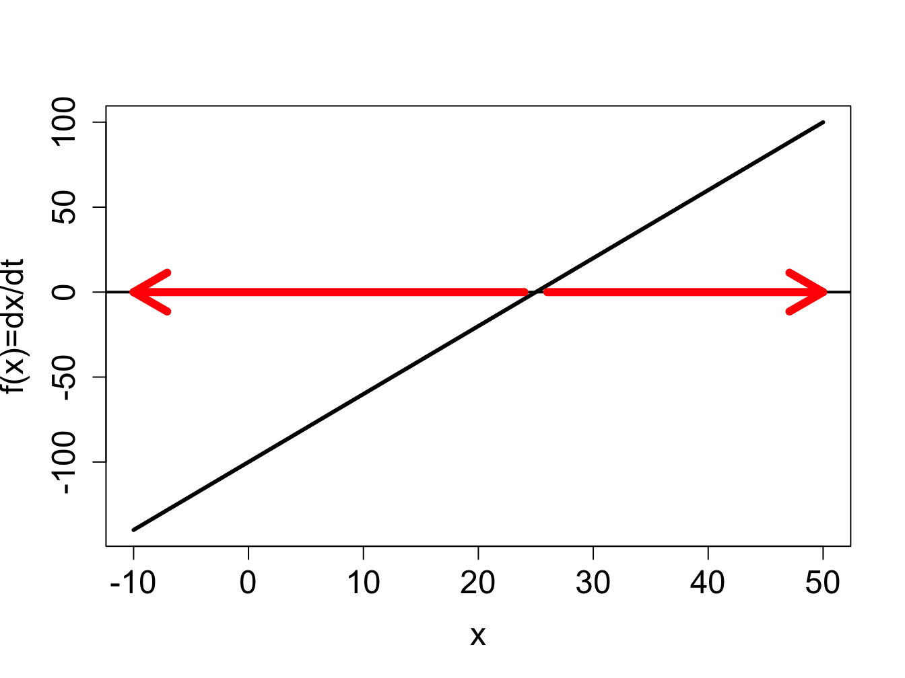

Example. Consider a linear ODE the likes of which we have solved in section \(\ref{sec:math15}\): \[\frac{dx}{dt} = 4x -100\] The defining function is a straight line vs. \(x\), its graph is shown in figure \(\ref{fig:ch16_flow_linear}\)a. Based on this graph, we conclude that the solution decreases when \(x<25\) and increases when \(x>25\). Thus we can sketch the solution \(x(t)\) over time, without knowing its functional form. The dynamics depends on the initial value: if \(x(0)<25\), the solution will keep decreasing without bound, and go off to negative infinity; if \(x(0)>25\), the solution will keep decreasing without bound, and go off to positive infinity. This is shown by plotting numeric solutions of this ODE for several initial values in figure \(\ref{fig:ch16_flow_linear}\)b. The dotted line shows the location of the special value of 25 which separates the interval of growth from the interval of decline.
Example. Now let us analyze a nonlinear ODE, specifically the logistic model with the following parameters: \[\frac{dP}{dt} =0.3P\left(1-\frac{P}{40}\right)\]
The defining function is a downward-facing parabola with two roots at \(P=0\) and \(P=40\), as shown in figure \(\ref{fig:ch16_flow_logistic}\)a. Between the two roots, the defining function is positive, which means the derivative \(dP/dt\) is positive too, so the solution grows on that interval. For \(P<0\) and \(P>40\), the solution decreases. Therefore, we can sketch the graphs of the solution \(P(t)\) starting with different initial conditions, as show in figure \(\ref{fig:ch16_flow_logistic}\)b.
To summarize, the defining function of the ODE determines the rate of change of the solution \(x(t)\) depending on the value of \(x\). The graphical approach to finding areas of right and left flow is based on graphing the function \(f(x)\), and dividing the x-axis based on the sign of \(f(x)\). In the areas where \(f(x) > 0\), its graph is above the x-axis, and the flow is to the right; conversely, when \(f(x) < 0\), its graph is below the x-axis, and the flow is to the left. The next subsection puts this approach in a more analytic framework.
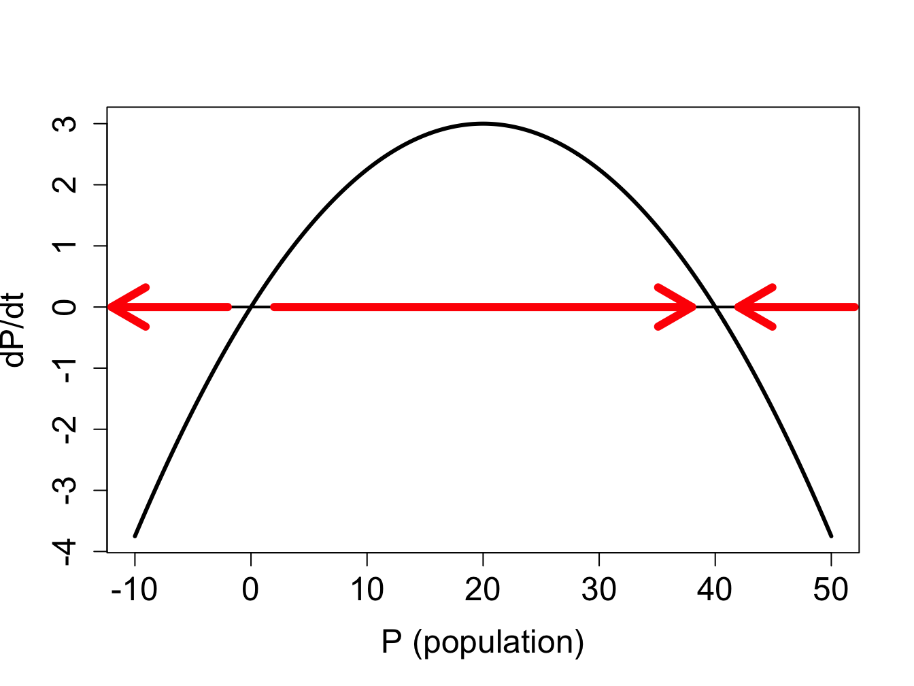
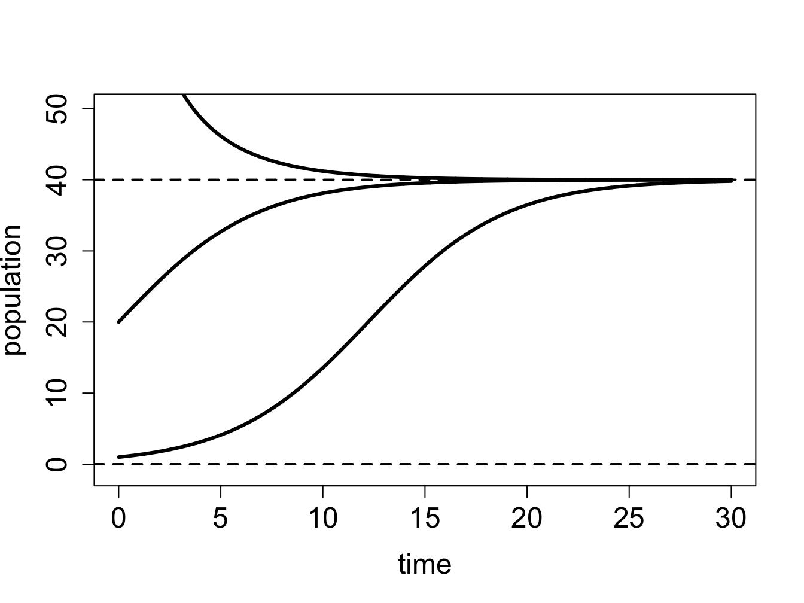
10.2.2 fixed points and stability
We have seen that the dynamics of solutions of differential equations depend on the initial value of the dependent variable: for some values the solution increases, for others it decreases, and for intermediate values it remains the same. Those special values separating intervals of increase and decrease are called fixed points (or equilibria), and the first step to understanding the dynamics of an ODE is finding its fixed points. A fixed point is a value of the solution at which the dynamical system stays constant, thus, the derivative of the solution must be zero. Here is the formal definition:
Definition
For an ordinary differential equation \(\dot x = f(x)\), a point \(x^*\) which satisfies \(f(x^*)=0\) is called a fixed point or equilibrium, and the solution with the initial condition \(x(0)=x^*\) is constant over time \(x(t)=x^*\).
Example. The linear equation \(\dot x = rx\) has a single fixed point at \(x^* = 0\). For a more interesting example, consider a logistic equation: \(\dot x = x - x^2\). Its fixed points are the solutions of \(x - x^2 = 0\), therefore there two fixed points: \(x^* = 0, 1\). We know that if the solution has either of the fixed points as the initial condition, it will remain at that value for all time.
Locating the fixed points is not sufficient to predict the global behavior of the dynamical system, however. What happens to the solution of a dynamical system if the initial condition is very close to an equilibrium, but not precisely at it? Put another way, what happens if the equilibrium is perturbed? The solution may be attracted to the equilibrium value, that is, it approaches it ever-closer, or else it is not. In the first case, this is called a stable equilibrium, because a small perturbation does not dramatically change the long-term behavior of the solution. In the latter case, the equilibrium is called unstable, and the solution perturbed from the equilibrium never returns. These concepts are formalized in the following definition
Definition
A fixed point \(x^*\) of an ODE \(\dot x = f(x)\) is called a stable fixed point (or sink) if for a sufficiently small number \(\epsilon\), the solution \(x(t)\) with the initial condition \(x_0 = x^* + \epsilon\) approaches the fixed point \(x^*\) as \(t \rightarrow \infty\). If the solution \(x(t)\) does not approach \(x^*\) for all nonzero \(\epsilon\), the fixed point is called an unstable fixed point (or source).
To determine whether a fixed point is stable analytically we use the approach called linearization, which involves replacing the function \(f(x)\) with a linear approximation. Let us define \(\epsilon(t)\) to be the deviation of the solution \(x(t)\) from the fixed point \(x^*\), so we can write \(x(t) = x^* + \epsilon(t)\). Assuming that \(\epsilon(t)\) is small, we can write the function \(f(x)\) using Taylor’s formula: \[ f(x^*+\epsilon(t))= f(x^*)+f'(x^*) \epsilon(t) + ... = f'(x^*) \epsilon(t) + ... \]
The term \(f(x^*)\) vanished because it is zero by definition \(\ref{def:ch16_fixedpt}\) of a fixed point. The ellipsis indicates all the terms of order \(\epsilon(t)^2\) and higher, which are very small if \(\epsilon(t)\) is small, and thus can be neglected. Thus, we can write the following approximation to the ODE \(\dot x = f(x)\) near a fixed point:
\[ \dot x = \frac{d(x^* + \epsilon(t))}{dt} = \dot \epsilon(t) = f'(x^*) \epsilon(t)\]
Thus we replaced the complicated nonlinear ODE near a fixed point with a linear equation, which approximates the dynamics of the deviation \(\epsilon(t)\) near the fixed point \(x^*\); note that the derivative \(f'(x^*)\) is a constant for any given fixed point. In section \(\ref{sec:math15}\) we classified the behavior of solutions for the general linear ODE \(\dot x = rx\), and now we apply this classification to the behavior of the deviation \(\epsilon(t)\). If the multiple \(f'(x^*)\) is positive, the deviation \(\epsilon(t)\) is growing, the solution is diverging away from the fixed point, and thus the fixed point is unstable. If the multiple \(f'(x^*)\) is negative, the deviation \(\epsilon(t)\) is decaying, the solution is converging to the fixed point, and thus the fixed point is stable. Finally, there is the borderline case of \(f'(x^*) = 0\) which is inconclusive, and the fixed point may be either stable or unstable. The derivative stability analysis is summarized in the following:
- \(f'(x^*) > 0\): the slope of \(f(x)\) at the fixed point is positive, then the fixed point is .
- \(f'(x^*) < 0\): the slope of \(f(x)\) at the fixed point is negative, then the fixed point is .
- \(f'(x^*) = 0\): stability cannot be determined from the derivative.
Therefore, knowing the derivative or the slope of the defining function at the fixed point is enough to know its stability. If the derivative has the discourtesy of being zero, the situation is tricky, because then higher order terms that we neglected make the difference. We will mostly avoid such borderline cases, but they are important in some applications .
A word of caution: The derivative of the defining function \(f'(x)\) is not the second derivative of the solution \(x(t)\). This is a common mistake, because the function \(f(x)\) is equal to the time derivative of \(x(t)\). However, the derivative \(f'(x)\) is not with respect to time, it is with respect to x, the dependent variable. In other words, it reflects the slope of the graph of the defining function \(f(x)\), not the curvature of the graph of the solution \(x(t)\).
To summarize, here is an outline of the steps for analyzing the behavior of solutions of an autonomous one-variable ODE. These tasks can be accomplished either by plotting the defining function \(f(x)\) and finding the fixed points and their stability based on the plot, or by solving for the fixed points on paper, then finding the derivative \(f'(x)\) and plugging in the values of the fixed points to determine their stability. Either approach is valid, but the analytic methods are necessary when dealing with models that have unknown parameter values, which makes it impossible to represent the defining function in a plot.
10.2.3 Outline of qualitative analysis of an ODE
find the fixed points by setting the defining function \(f(x)=0\) and solving for values of \(x^*\)
divide the domain of \(x\) into intervals separated by fixed points \(x^*\)
determine on which interval(s) the solution \(x(t)\) is increasing and on which it is decreasing
use derivative stability analysis (graphically or analytically) to determine which fixed points are stable
sketch the solutions \(x(t)\) starting at different initial values, based on the stability analysis and whether the solution is increasing or decreasing in a particular interval
Example: linear model. Consider the linear ODE that we analyzed above \(dx/dt = 4x -100\). Let us go through the steps of qualitative analysis:
find the fixed points by setting the defining function to 0: \(0 = 4x -100\), so there is only one fixed point \(x^* = 25\)
divide the domain of \(x\) into intervals separated by fixed points \(x^*\): the intervals are \(x<25\) and \(x>25\)
the solution is decreasing on the interval \(x<25\) because \(f(x)<0\) there, and the solution is increasing on the interval \(x>25\) because \(f(x)>0\)
the derivative \(f'(x)\) at the fixed point is 4, so the fixed point is unstable
solutions \(x(t)\) starting at different initial values are shown in figure \(\ref{fig:ch16_flow_linear}\)b and they behave as follows: solutions with initial values below \(x^*=25\) decreasing, and those with initial values above \(x^*=25\) increasing.
** Example: logistic model.** Consider the logistic model from the previous subsection, \(dP/dt =0.3P(1-P/40)\). We have analyzed the stability of the two fixed points using the plot in figure \(\ref{fig:ch16_flow_logistic}\), and saw that the flow takes the solution away from \(P=0\), and toward \(P=K\), thus the first fixed point is unstable, while the second is stable. Let us repeat the analysis using analytic tools:
find the fixed points by setting the defining function to 0: \(0 = 0.3P(1-P/40)\). The two solutions are \(P^*=0\) and \(P^*=40\).
divide the domain of \(P\) into intervals separated by fixed points \(P^*\): the intervals are \(P<0\); \(0<P<40\); and \(P>40\)
the solution is decreasing on the interval \(P<0\) because \(f(P)<0\) there, the solution is increasing on the interval \(0<P<40\) because \(f(P)>0\), and the solution is decreasing for \(P>40\) because \(f(P)<0\) there
the derivative is \(f'(P)=0.3-0.3P/20\); since \(f'(0)=0.3 > 0\), the fixed point is unstable; since \(P'(40)=-0.3<0\), the fixed point is stable
solutions \(P(t)\) starting at different initial values are shown in figure \(\ref{fig:ch16_flow_logistic}\)b and they behave as follows: solutions with initial values below \(P^*=0\) decreasing, those with initial values between 0 and 40 are increasing and asymptotically approaching 40, and those with initial values above 40 decreasing and asymptotically approaching 40.
This can be done more generally using the derivative test: taking the derivative of the function on the right-hand-side (with respect to \(P\)), we get \(f'(P) = r(1-2\frac{P}{K})\). Assuming \(r>0\) (the population is viable), \(f'(0)= r\) is positive, and the fixed point is therefore unstable. This makes biological sense, since we assumed positive inherent population growth, so given a few individuals, it will increase in size. On the other hand, \(P'(K) = r(1-2) = -r\), so this fixed point is stable. Thus, according to the logistic model, a population with a positive inherent growth rate will not grow unchecked, like in the exponential model, but will increase until it reaches its carrying capacity, at which it will stay (if all parameters remain constant).
Example: semi-stable fixed point. Consider the ODE \(dx/dt = -x^3 + x^2\), whose defining function is plotted in figure \(\ref{fig:ch16_flow_semi}\)a, showing two fixed points at \(x = 0, 1\).
find the fixed points by setting the defining function to 0: \(0 = -x^3 + x^2\). The two fixed points are \(x^*=0\) and \(x^*=1\).
divide the domain of \(x\) into intervals separated by fixed points \(x^*\): the intervals are \(x<0\); \(0<x<1\); and \(x>1\)
the solution is increasing on the interval \(x<0\) because \(f(x)>0\) there, the solution is increasing on the interval \(0<x<1\) because \(f(x)>0\), and the solution is decreasing for \(x>1\) because \(f(x)<0\) there
the derivative is \(f'(x)=-3x^2+2x\); since \(f'(0)=0\), the fixed point is undetermined; since \(f'(1)=-1<0\), the fixed point is stable.
the solutions \(x(t)\) starting at different initial values are shown in figure \(\ref{fig:ch16_flow_semi}\)b, and they behave as follows: solutions with initial values below 0 are increasing and asymptotically approaching 0, those with initial values between 0 and 1 are increasing and asymptotically approaching 1, and those with initial values above 1 are decreasing and asymptotically approaching 1.
This example shows how graphical analysis can help when derivative analysis is undetermined. The red arrows on the x-axis of figure \(\ref{fig:ch16_flow_semi}\) show the direction of the flow in the three different regions separated by the fixed points. Flow is to the right for \(x<1\), to the left for for \(x>1\); it is clear that the arrows approach the fixed point from both sides, and thus the fixed point is stable, as the negative slope of \(f(x)\) at \(x=1\) indicates. One the other hand, the fixed point at \(x=0\) presents a more complicated situation: the slope of \(f(x)\) is zero, and the flow is rightward on both sides of the fixed point. This type of fixed point is sometimes called semi-stable, because it is stable when approached from one side, and unstable when approached from the other.
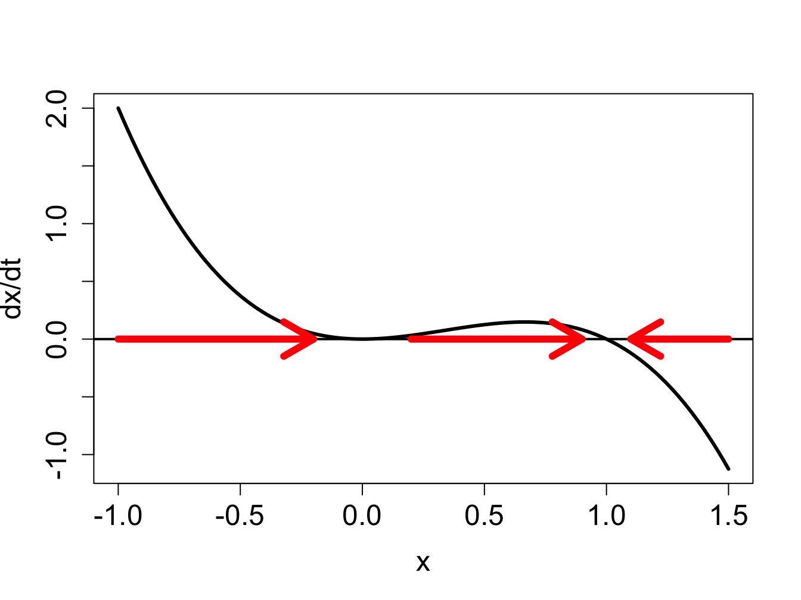
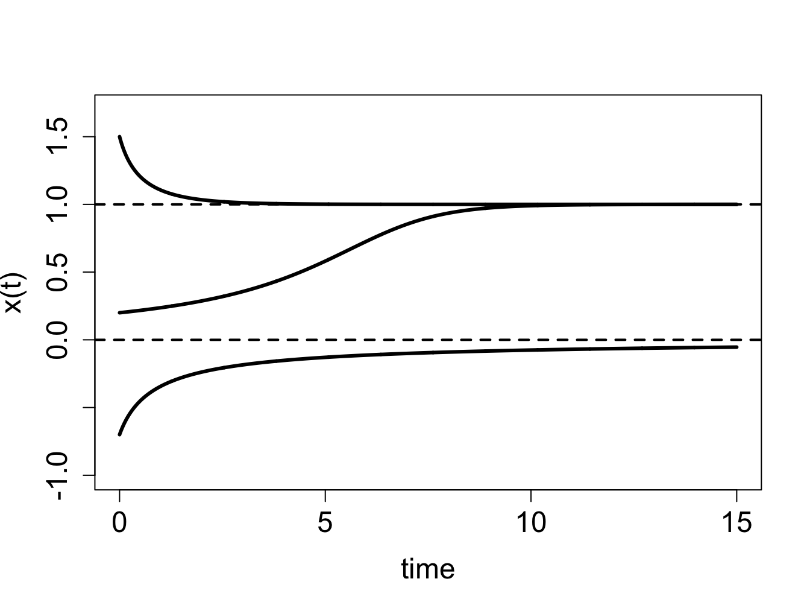
10.2.4 Exercises
For the following differential equations: a) plot the defining function over the indicated range (use any computational tools you wish) to determine the intervals on which the dependent variable is increasing and decreasing; b) find the equilibria c) determine the stability of each equilibrium; d) based on your analysis in parts a-c, sketch (by hand) plots of the solutions with the specified initial values.
\[ \frac{dC}{dt} = -0.2C + 60; \; C \in (0,500); \; C(0) = 200; \; C(0) = 400 \]
\[ \frac{dP}{dt} = 0.01P(800-P) - 0.5P; \; P \in (-1, 1000); \; P(0) = 100; \; P(0) = 800\]
\[ \frac{dR}{dt} = R(80-R) - 1200; \; R \in (-1, 100); \; R(0) = 10; \; R(0) = 80\]
\[ \frac{dI}{dt} = 0.1I(1-I) - 0.03I; \; I \in (-0.1, 1.1); \; I(0) = 0.2; \; I(0) = 0.9 \]
\[ \frac{dR}{dt} = \frac{R}{1+R}-0.1R; \; R \in (-0.1, 10); \; R(0) = 20; \; R(0) = 0 \]
\[ \frac{dP}{dt} = 0.02P(P-100)(1200-P) \; P \in (-0.1, 1200); \; P(0) = 20; \; P(0) = 1000 \]
\[ \frac{dY}{dt} = 0.01Y(Y-100)(Y-200) \; Y \in (-0.1, 300); \; Y(0) = 20; \; Y(0) = 250 \]
(harder) The logistic function was defined in chapter 2, equation 2.4. Verify that the logistic function with independent variable \(t\) solves the logistic ODE in equation \(\ref{eq:log_cont_model}\) and relate the parameters in the function to the parameters \(r\) and \(K\) in the ODE.
10.3 Functions in R
Like most programming languages, R allows one to define and use structures called functions. Some are already written and loaded into the R distribution, for example, the function mean() we use to compute the mean of a vector variable, while others can be defined by users. Functions are discrete chunks of code that can be called from the outside to perform some task. The function receives inputs from the call and returns the result back. Here is the general structure of a function in R:
myfunction <- function(arg1, arg2, ...) {
statements
return(answer)
}A function is a piece of code that is defined separately and can be called by other pieces of code. The main purpose is to create a “black box” that does a specific job and can be used repeatedly just by calling the function (invoking its name), rather than copying the code repeatedly.
A function generally has input variables (although sometimes there are none) and returns an output using the return() statement. It is important to distinguish between the inside of the function - the code between the curly braces in the function definition - and the outside, that is everything else. The inputs are passed to the function in the call (through the parentheses) and then used inside the function to do its business and produce an output, which is then returned back to the place in the code where the function was called.
10.3.1 defining a function
Here is an example of a function definition, with input variables N and r. Between the curly braces is the body of the function, which in this case multiplies the two input variables and then returns them.
my_funk <- function(N,r){
ans <- r*N # updating function f(N)
return(ans)
}Note that after running the code chunk above, you should see the name my_funk in your environment (under Functions). This means this function is defined in memory and ready to be called.
10.3.2 calling a function
After a function is defined, it is ready to be called (executed) by invoking its name and giving the correct number of inputs. Here’s an example of a function call:
a <- 30
y <- 1:10
print(my_funk(y, a)) [1] 30 60 90 120 150 180 210 240 270 300Notice that the variable names in the fuction call do not have to be same as what they are called within the function. IMPORTANT: a function uses the order of variables in the function call, called external variables (y, a) to assign their names within the function, called internal variables (N, r). (There is a way to specify which input belongs to which internal variable, e.g. plot(x=time, y=sol) and in that case the order is not important.)
10.3.3 using a function to solve a difference equation
We have solved discrete-time dynamic models (difference equations) using for loops. You can use a function to calculate the next value of the solution, by passing the current value and any parameters as inputs to the function, as you can see in the code chunk below:
numsteps<-30 # set number of steps
sol <- rep(0,numsteps+1) # pre-allocate sol1
sol[1] <- 100 # set initial value
r <- 2 # define the multiplicative constant
for (i in 1:numsteps) { # repeat for numsteps
sol[i+1] <- my_funk(sol[i], r) # calculate the next value
}
time <- 0:numsteps # define time vector
plot(time,sol,t='b',xlab='time',ylab='solution',lwd=2)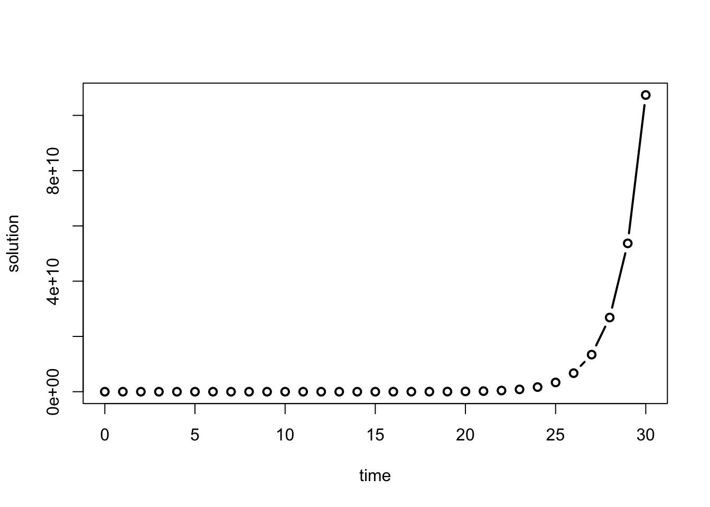
10.3.4 Exercises
- Write a function that takes the input variable and multiplies it by 1.03, like the mathematical function \(f(x) = 1.03x\).
# YOUR CODE HERE- Use the function to take a variable and multiply it by 1.03, replacing the old value of the variable. If the initial value is 5, the new value should be 5.15.
# YOUR CODE HERE- Write a script to take a variable and multiply it by 1.03 one hundred times, replacing the old value of the variable using a for loop and the function you created. Starting with the initial value is 5, the script should return the value 96.093.
# YOUR CODE HERE- Modify the script above to save all the intermediate values into a vector, and plot a graph of this vector vs. the iteration step (from 1 to 101). Hint: this is exactly like the example code above.
# YOUR CODE HERE10.4 Modeling the spread of infectious disease spread
The field of epidemiology studies the distribution of disease and health states in populations. Epidemiologists describe and model these issues with the goal of helping public health workers devise interventions to improve the overall health outcomes on a large scale. One particular topic of interest is the the spread of infectious disease and how best tor respond to it.. Because epidemiology is concerned with large numbers of people, the models used in the field do not address the details of an individual disease history. One approach to modeling this is to put people into categories, such as susceptible (those who can be infected but are not), infectious (those who are infected and can spread the disease), and recovered (those who cannot be infected or spread disease). This type of models is called a compartment model and they are they commonly used to represent infectious disease on a population level both for deterministic models (e.g. ODEs) and stochastic models (e.g. Markov models). Dividing people into categories involves the assumption that everyone in a particular category behaves in the same manner: for instance, all susceptible people are infected with the same rate and all infected people recover with the same rate.
Let us construct an ODE to describe a two-compartment epidemiology model. There are two dependent variables to be tracked: the number of susceptible (\(S\)) and infected (\(I\)) individuals in the population. The susceptible individuals can get infected, while the infected ones can recover and become susceptible again. The implicit assumption is that there is no immunity, and recovered individuals can get infected with the same ease as those who were never infected. There are some human diseases for which this is true, for instance the common cold or gonorrhea. Transitions between the different classes of individuals can be summarized by the following scheme: \[ S + I \xrightarrow{\beta} I \xrightarrow{\gamma} S \] Here \(\beta\) is the individual rate of infection, also known as the transmission rate, and \(\gamma\) is the individual rate of recovery. There is an important distinction between the processes of infection and recovery: the former requires an infected individual and a susceptible individual, while the latter needs only an infected individual. Therefore, it is reasonable to suppose that the rate of growth of infected individuals is the product of the individual transmission rate \(\beta\) and the product of the number of infected and susceptible individuals. The overall rate of recovery is the individual recovery rate \(\gamma\) multiplied by the number of the infected. This leads to the following two differential equations: \[\begin{eqnarray*} \dot S &=& -\beta IS + \gamma I \\ \dot I & = &\beta I S - \gamma I \end{eqnarray*}\] Note that, as in the chemical kinetics models, the two equations add up to zero on the right hand side, leading to the conclusion that \(\dot S + \dot I = 0\). Therefore, the total number of people is a conserved quantity \(N\), which does not change. This makes sense since we did not consider any births or deaths in the ODE model, only transitions between susceptible and infected individuals.
We can use the conserved quantity \(N\) to reduce the two equations to one, by the substitution of \(S = N -I\): \[ \dot I = \beta I (N - I) - \gamma I \] This model may be analyzed using qualitative methods that were developed in this chapter, allowing prediction of the dynamics of the fraction of infected for different transmission and recovery rates. First, let us find the fixed points of the differential equation. Setting the equation to zero, we find: \[ 0 = \beta I (N - I) - \gamma I \Rightarrow I^* = 0; \; I^* = N - \gamma/\beta \] This means that there are two equilibrium levels of infection: either nobody is infected (\(I^* = 0\)) or there is some persistent number of infected individuals ($ I^* = N - /$). Notice that the second fixed point is only biologically relevant if $N > /$.
Use the derivative test to check for stability. First, find the general expression for derivative of the defining function: $f’(I) = -2 I + N - $. \begin{figure}[htbp] % figure placement: here, top, bottom, or page
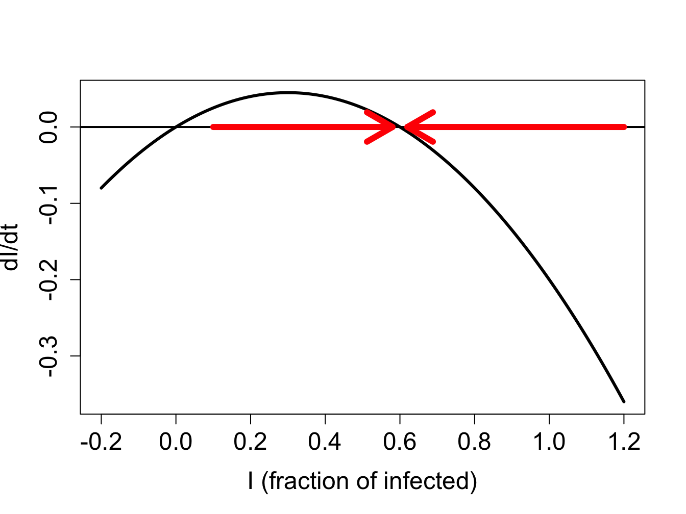
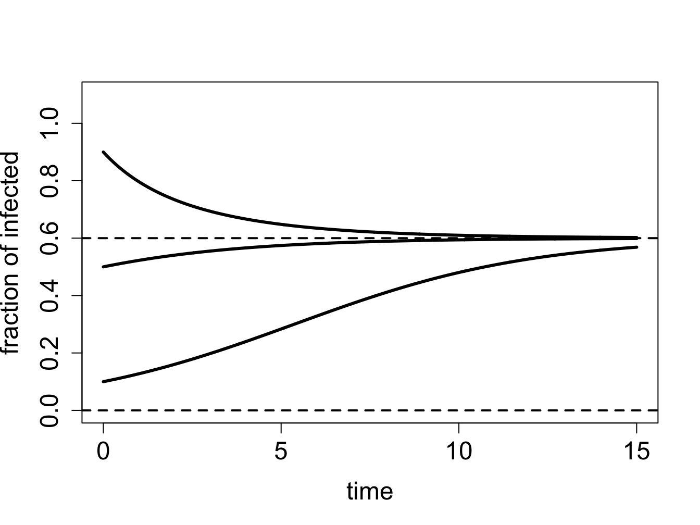
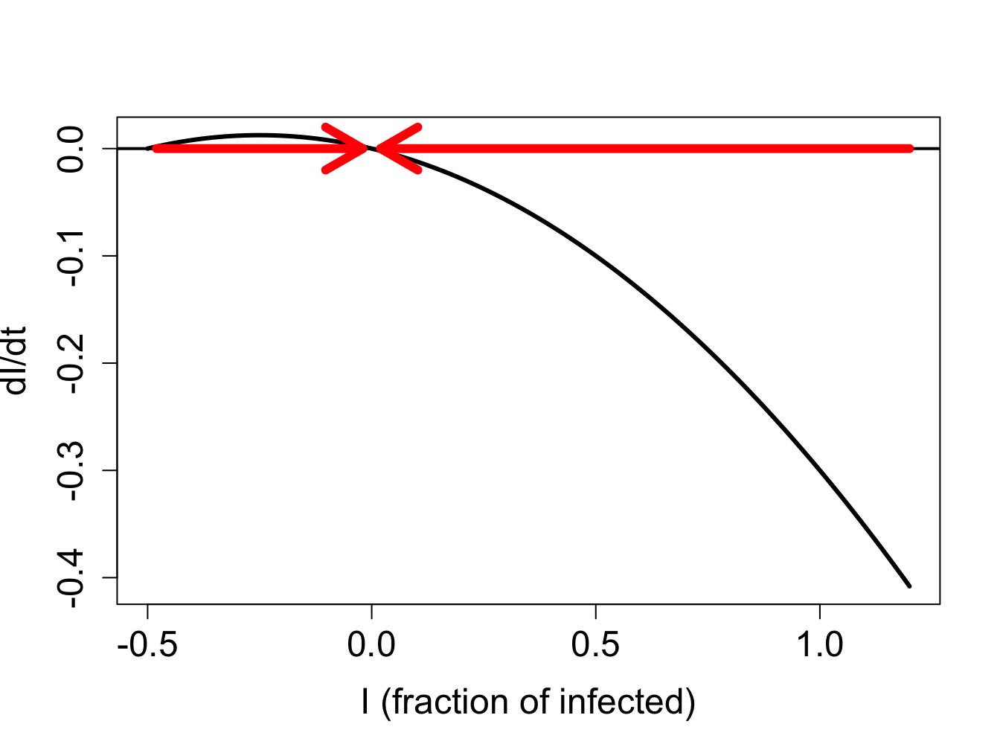
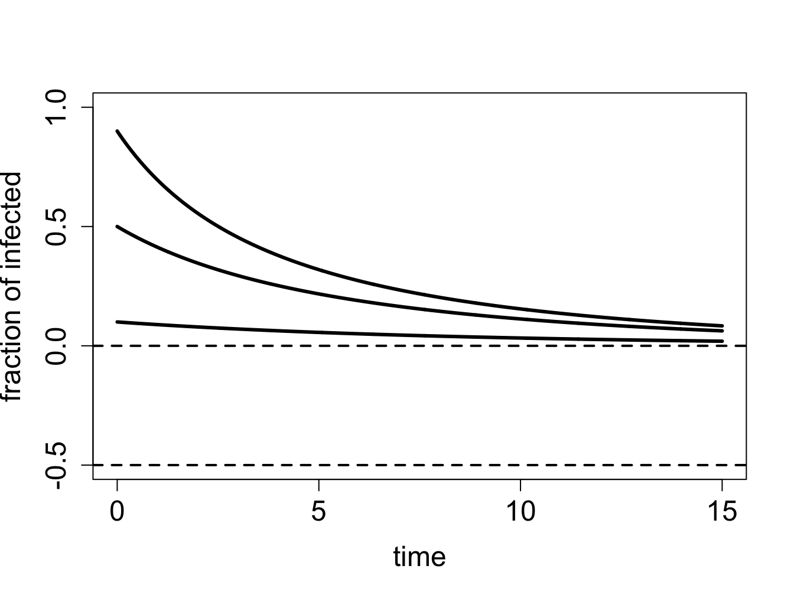
The stability of the fixed point \(I^* = 0\) is found by plugging in this value into the derivative formula: $f’(0) = N - $. We learned in section \(\ref{sec:math16}\) that a fixed point is stable if the derivative of the defining function is negative. Therefore, \(I^* = 0\) is stable if \(\gamma - \beta N > 0\), and unstable otherwise. This gives us a stability condition on the values of the biological parameters. If the recovery rate \(\gamma\) is greater than the rate of infection for the population (the transmission rate multiplied by the population size) \(\beta N\), then the no-infection equilibrium is stable. This predicts that the infection dies out if the recovery rate is faster than the rate of infection, which makes biological sense.
Similarly, we find the stability of the second fixed point \(I^* = N - \gamma/\beta\) by substituting its value into the derivative, to obtain \(f'(N - \gamma/\beta) = \gamma - \beta N\). By the same logic, as above, this fixed point is stable if \(\gamma - \beta N < 0\), or if \(\gamma < \beta N\). This is a complementary condition for the fixed point at 0, that is, only one fixed point can be stable for any given parameter values. In the biological interpretation, if the transmission rate \(\beta N\) is greater than the recovery rate \(\gamma\), then the epidemic will persist.
We can use our graphical analysis skills to illustrate the situation. Consider a situation in which \(\gamma < \beta N\). As predicted by stability analysis, the zero infection equilibrium should be unstable, and the equilibrium at \(N - \gamma/\beta\) should be stable. In order to plot the function $f(I) = I (N - I) - I $, we choose the specific parameter values \(N=1\), \(\gamma = 0.1\) and \(\beta = 0.2\); setting \(N=1\) means \(S\) and \(I\) represent the fraction of the population in the susceptible and infected categories. Figure \(\ref{fig:ch16_flow_sis1}\)a shows the direction of the flow on the \(I\)-axis prescribed by the defining function \(f(I)\) with red arrows. It is clear that solutions approach the fixed point at \(N - \gamma/\beta\) from both directions, which make it a stable fixed point, while diverging from \(I=0\), as shown in figure \(\ref{fig:ch16_flow_sis1}\)b.
On the other hand, if \(\gamma > \beta N\), stability analysis predicts that the no-infection equilibrium (\(I=0\)) is stable. Figure \(\ref{fig:ch16_flow_sis2}\)a shows the plot of the defining function for the parameter values \(N=1\), \(\gamma = 0.3\) and \(\beta = 0.2\). The flow on the \(I\)-axis is toward the zero equilibrium, therefore it is stable. Note that the second equilibrium at \(I^* = N - \gamma/\beta\) is negative, and thus has no biological significance. The solutions, if the initial value is positive, all approach 0, so the infection inevitably dies out.
Mathematical modeling of epidemiology has been a success story in the last few decades. Public health workers routinely estimate the parameter called the basic reproductive number \(R_0\) defined to be the average number of new infections caused by a single infected individual in a susceptible population. This number comes out of our analysis above, where we found \(R_0 = N \beta/\gamma\) to determine whether or not an epidemic persisted . This number is critical in more sophisticated models of epidemiology.
Mathematical models are used to predict the time course of an epidemic, called the epidemic curve and then advise on the public health interventions that can reduce the number of affected individuals. In reality, most epidemic curves have the shape similar to the data from the Ebola virus epidemic in figure \(\ref{fig:ch16-ebola}\). Most such curves show an initial increase in infections, peaking, and the declining to low levels, which is fundamentally different than the solution curves we obtained from the two-compartment model. To describe dynamics of this nature, models with more than two variables are needed, such as classic three-compartment SIR models (susceptible-infected-recovered) models and their modifications . Being able to predict the future of an epidemic based on \(R_0\) and other parameters allows public health officials to prepare and deploy interventions (vaccinations, quarantine, etc.) that have the best shot at minimizing the epidemic.
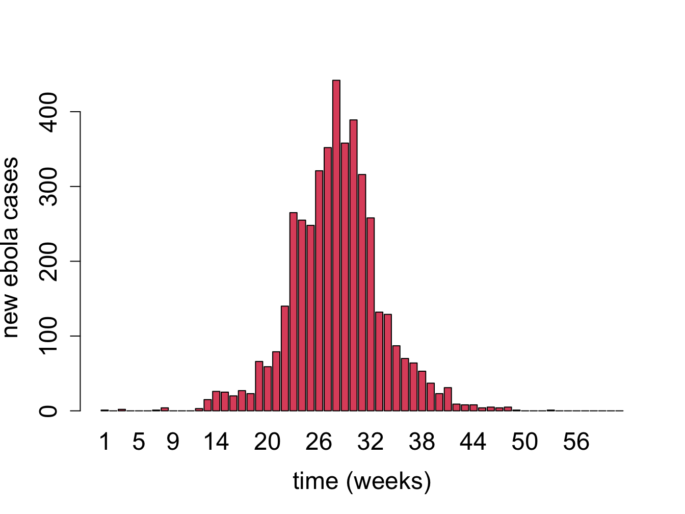
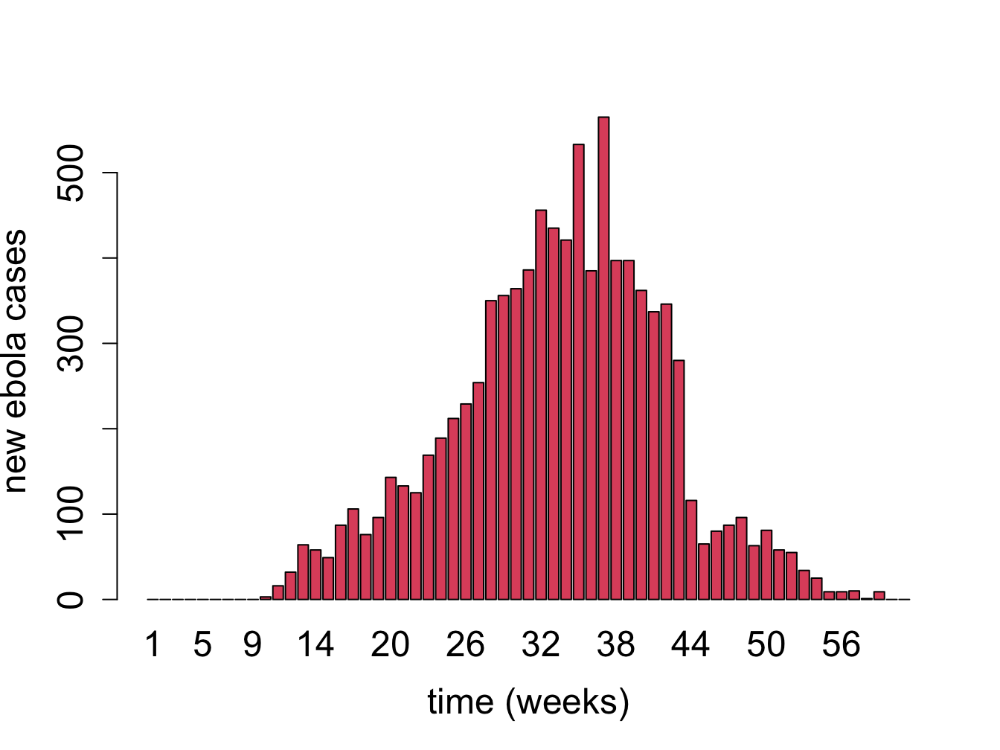
10.4.1 Discussion
The following questions encourage you to think critically about modeling of infectious diseases.
What effect does changing the infection rate \(\beta\) have on the basic reproductive rate? Explain the biological intuition behind this.}
What effect does changing the recovery rate \(\gamma\) have on the basic reproductive rate? Explain the biological intuition behind this.}
Discuss what assumptions are made by using compartment models, and when they might be justified.}
Discuss the difference in assumptions in using a Markov model with Susceptible and Infected compartments compared to an ODE model with the same two compartments. Under what circumstances does it make sense to use one or the other?}
Read the paper and discuss the strengths and limitations of the more complicated compartment model intended to account for human behavior.}